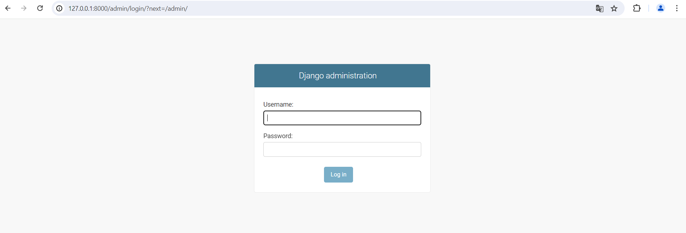
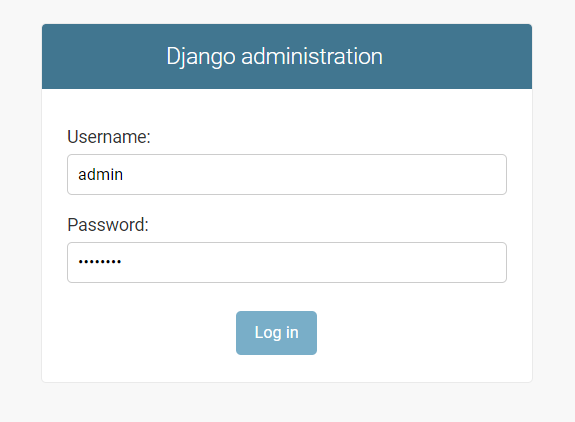
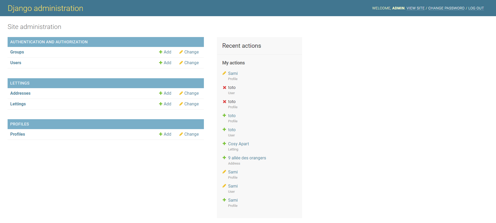

Installation
Clone the project on your local machine
Type this command on your terminal to clone the project:
git clone 'https://gitlab.com/sf5810217/oc_lettings.git'
Run in local
Next, we need to create our local environment:
python -m venv venv
Now activate our local environment:
In Windows:
venv/Scripts/activate.bat
In MacOS:
venv/bin/activate
First, make an update of pip:
python -m pip install --upgrade pip
Second, we need to install all dependances:
pip install -r requirements.txt
Finally, we must to create a .env files for the configuration settings: Create a ‘.env’ files and copy paste this code:
SECRET_KEY = "yoursecretkey"
DSN = "your dsn sentry"
DJANGO_DEBUG = 'True'
ALLOWED_HOSTS = ['*']
The secret key is a component essential for the security of your django application. She’s use by Django for:
cryptographic signatures
password hashing
injection protection
The Sentry DSN is an url to allows the application to send events to your Sentry instance:
error
exceptions
messages
Quickstart
Once you clone the repository and files .env create, we need to make the migrations database:
python manage.py makemigrations
python manage.py migrate
python manage.py check
Launch the application works locally:
python manage.py runserver
Do some tests
python manage.py test
Verify linting
flake8
Verify the test coverage and generate a html report
pytest --cov=. --cov-report html
Admin dashboard
To access to the admin dashboard, go on admin login : http://127.0.0.1:8000/admin/
To log: username: admin password: Abc1234!
You are now on your dashboard and you can easily manage your data
Reference Installation.